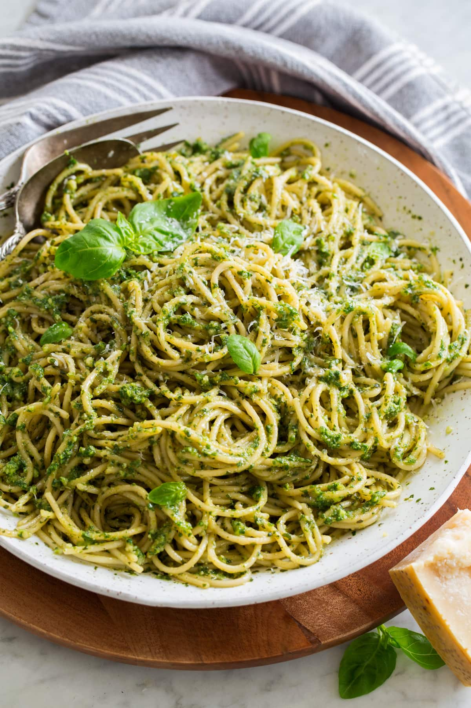
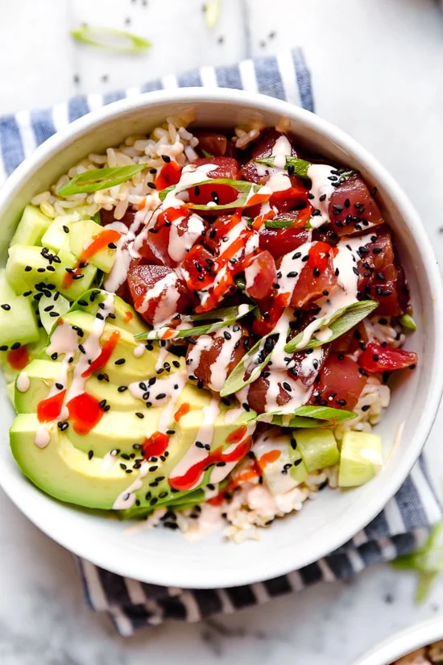

RecipeHUB
 Chocolate Chip Cookies
Chocolate Chip Cookies -
 Banana Bread
Banana Bread -
 Vegetable Quiche
Vegetable Quiche -
 Grilled BBQ Chicken Burgers
Grilled BBQ Chicken Burgers -
 Mushroom Swiss Burger
Mushroom Swiss Burger -
 Greek Lamb Burger
Greek Lamb Burger
-
 Baked Honey Glazed Chicken
Baked Honey Glazed Chicken
-
 Baked Chicken Thighs
Baked Chicken Thighs
-
 Chicken Stir Fry
Chicken Stir Fry
-
 Kung Pao Chicken
Kung Pao Chicken
-
 Mapo Tofu
Mapo Tofu
-
 Dumplings (Jiaozi)
Dumplings (Jiaozi)
-
 Coconut Curry Rice
Coconut Curry Rice
-
 Indian Curry Rice
Indian Curry Rice
-
 Chicken Stock Curry Rice
Chicken Stock Curry Rice
-
 Chocolate Mug Cake
Chocolate Mug Cake
-
 Brownie Bites
Brownie Bites
-
 Lemon Bars
Lemon Bars
-
 Greek Grilled Chicken Skewers
Greek Grilled Chicken Skewers
-
 Grilled Vegetable Platter
Grilled Vegetable Platter
-
 Grilled Lamb Chops
Grilled Lamb Chops
-
 Gingerbread Cookies
Gingerbread Cookies
-
 Potato Latkes
Potato Latkes
-
 Figgy Pudding
Figgy Pudding
-
 Chicken Biryani
Chicken Biryani
-
 Butter Chicken
Butter Chicken
-
 Palak Paneer
Palak Paneer
-
 Dragon Roll
Dragon Roll
-
 Tiramisu
Tiramisu
-
 Honey Butter Chicken
Honey Butter Chicken
-
 Pasta With Peas
Pasta With Peas
-
 Broccoli Cheddar Soup
Broccoli Cheddar Soup
-
 Japanese Chicken Curry Rice
Japanese Chicken Curry Rice
-
 Chicken Tacos
Chicken Tacos
-
 Chicken Fajitas
Chicken Fajitas
-
 Chicken Burrito
Chicken Burrito
-  Pesto Pasta
-
 Garlic Parmesan Pasta
Garlic Parmesan Pasta
-
 Spaghetti Aglio e Olio
Spaghetti Aglio e Olio
-
 Apple Turnovers
Apple Turnovers
-
 Fruit Tart Pastry
Fruit Tart Pastry
-
 Raspberry Danish Pastry
Raspberry Danish Pastry
-
 Pizza With Cherry Tomatoes
Pizza With Cherry Tomatoes
-
 Taco Pizza
Taco Pizza
-
 Red Pepper Pizza with Feta
Red Pepper Pizza with Feta
-
 Caesar Salad
Caesar Salad
-
 Caprese Salad
Caprese Salad
-
 Mediterranean Zucchini and Chickpea Salad
Mediterranean Zucchini and Chickpea Salad
-
 Grilled Cheese Sandwich
Grilled Cheese Sandwich
-
 Egg Salad Sandwich
Egg Salad Sandwich
-
 Veggie And Hummus Sandwich
Veggie And Hummus Sandwich
-
 Baked Salmon
Baked Salmon
- Spicy Tuna Poke Bowl
-
 Clam Chowder
Clam Chowder
-
 Strawberry Smoothie
Strawberry Smoothie
-
 Mango Pineapple Smoothie
Mango Pineapple Smoothie
-
 Green Detox Smoothie
Green Detox Smoothie
- Carrot Ginger Soup
-
 Creamy Potato and Leek Soup
Creamy Potato and Leek Soup
-
 Tomato Basil Soup
Tomato Basil Soup
-
 Vegan Chickpea Salad
Vegan Chickpea Salad
-
 Vegan Chocolate Mousse
Vegan Chocolate Mousse
-
 Vegan Lentil Soup
Vegan Lentil Soup
Japanese Chicken Curry Rice
Recipe by The guardian
Prep Time
35 mins
Cook Time
30 mins
Servings
4
Ingredients
Boneless, skinless chicken thighs 6 (optional)
Oil 1 tbsp (if cooking the chicken in the curry)
Butter 3 tbsp (or oil for vegans)
Cornflour or potato starch 1 tbsp
Japanese curry powder 1 tbsp
Chicken stock or dashi 600ml (or vegetarian dashi)
Waxy potatoes 200g, peeled and chopped into cubes
Large carrot 1, peeled and chopped into cubes
Medium courgette or another vegetable of your choice 1, chopped into cubes
Dark soy sauce 2 tsp
Mango chutney 2 tbsp
Cooked short-grain rice and pickled ginger, to serve
For the paste:
Onion 1, peeled and roughly chopped
Root ginger 4cm piece, peeled
Garlic cloves 2, peeled and crushed
Green apple 1, peeled, cored and chopped
Tomato puree 1 tbsp
Worcestershire sauce or vegan equivalent 1 tbsp
For the katsu (optional):
Dark soy sauce 2 tbsp
Garlic clove 1, peeled and crushed
Neutral oil for frying
Egg 1, beaten
Cornflour or potato starch 50g
Panko breadcrumbs 75g
Nutrition
Calories: 483 kcal
Carbohydrates: 36 g
Protein: 30 g
Fat: 26 g
Saturated Fat: 11 g
Cholesterol: 140 mg
Sodium: 712 mg
Potassium: 842 mg
Fiber: 4 g
Sugar: 4 g
Vitamin A: 600 IU
Vitamin C: 10 mg
Calcium: 50 mg
Iron: 4 mg
Instructions
1. First make the paste. Put the onion, ginger, garlic, apple, tomato puree and Worcestershire sauce in a food processor and whizz to a paste. If making katsu curry, bash out the chicken to an even thickness, then set aside and marinate in the soy and garlic.
2. Otherwise, cut the chicken into bite-sized pieces and put the oil in a large saucepan on a medium-high heat. Fry the chicken pieces until golden, then set aside, keeping the pan for the next step.
3. Melt the butter in a large saucepan, then stir in the cornflour and fry to a dark golden brown. Add the curry powder and cook, stirring, for a minute. Add the paste, fry for a couple of minutes, then whisk in the stock.
4. Add the potatoes, carrots and fried chicken pieces (if you’re not making katsu, that is), bring to a simmer and cook gently for about 25 minutes, until tender; after 18 minutes, add the courgettes to the mix. Stir the soy sauce and chutney into the sauce and season to taste. If making katsu, heat a fryer or a large, deep pan a third full of neutral oil to 160C. Put the egg, flour and breadcrumbs in three separate bowls.
5. Drag the bashed-out chicken through the cornflour to coat, dip it in the egg, shaking off any excess, then roll in the breadcrumbs to cover.
6. Fry for about eight minutes, turning once, until golden brown and cooked through, then drain on kitchen paper. Season and slice. Divide the rice and katsu, if making, between plates, spoon over the curry sauce, decorate with pickled ginger and serve.
Our goal is to offer the best recipes while minimizing waste. To avoid food waste if you don’t enjoy a recipe, we provide single-serving ingredient lists. Here’s the list:
Boneless, skinless chicken thigh 1 (optional)
Oil 0.17 tbsp (if cooking the chicken in the curry)
Butter 0.5 tbsp (or oil for vegans)
Cornflour or potato starch 0.17 tbsp
Japanese curry powder 0.17 tbsp
Chicken stock or dashi 100ml (or vegetarian dashi)
Waxy potato 33g, peeled and chopped into cubes
Large carrot 0.17, peeled and chopped into cubes
Medium courgette or another vegetable of your choice 0.17, chopped into cubes
Dark soy sauce 0.5 tsp
Mango chutney 0.5 tbsp
Cooked short-grain rice and pickled ginger, to serve
For the paste:
Onion 0.17, peeled and roughly chopped
Root ginger 1cm piece, peeled
Garlic clove 0.33, peeled and crushed
Green apple 0.17, peeled, cored and chopped
Tomato puree 0.17 tbsp
Worcestershire sauce or vegan equivalent 0.17 tbsp
For the katsu (optional):
Dark soy sauce 0.5 tbsp
Garlic clove 0.17, peeled and crushed
Neutral oil for frying
Egg 0.17, beaten
Cornflour or potato starch 12.5g
Panko breadcrumbs 18.75g